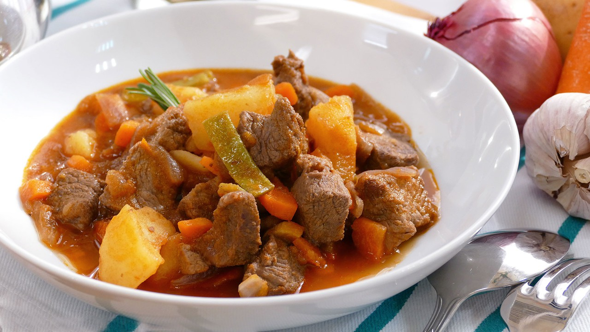
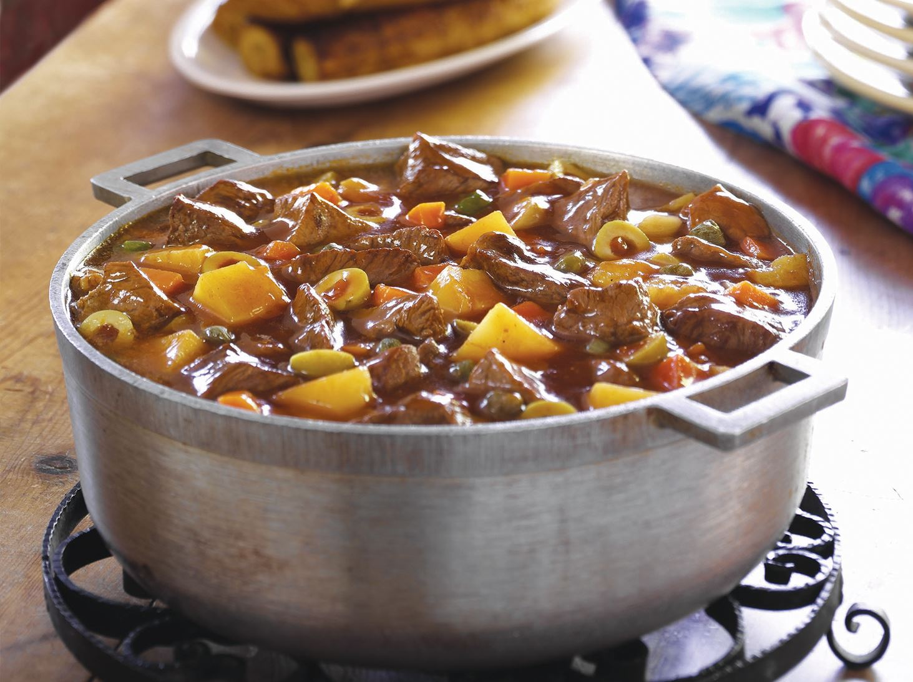

Como preparar un plato de carne guisada:

Indice:
- Ingredientes.
- Paso a paso.
- Resultado Final.
Ingredientes:
- 700 gr de carne de ternera para guisar
- 2 patatas
- 1 cebolla
- 4 zanahorias
- 1 pimiento verde
- 1 pimiento verde
- 4 dientes de ajo
- 100 ml de vino tinto
- 1 pastilla para guisos de carne
- aceite de oliva virgen extra
- sal
- pimienta
- perejil
Paso a paso:
- En primer lugar corta la carne de ternera en dados grandes. Salpimiéntalos y dóralos en una sartén con un chorro de aceite. Después, sácalos, escurre y resérvalos en un plato.
- A continuación, pela y pica los ajos, las cebollas y 2 zanahorias en daditos. Ponlos a pochar en una cazuela con aceite. Pica también el pimiento y agrégalo. Rehoga todo bien.
- Cuando las verduras estén pochadas, añade los dados de carne, vierte el vino tinto y dale un hervor.
- Incorpora un vaso de agua y la pastilla para guisos de carne desmenuzada. Tapa y cocina el guiso de carne durante 30-40 minutos.
- Mientras tanto, pela las otras zanahorias, córtalas en rodajas de 1 centímetro y cuécelas en un cazo con agua. Una vez cocidas, escurre bien y añádelas al guiso.
- Por otro lado, pela las patatas, córtalas en dados y ponlas a freír en una sartén con aceite caliente. Escurre y añádelas a la cazuela del estofado de carne.
- Cuando ya esté hecho, retira la cazuela del fuego y espolvorea con perejil picado.
¡La carne guisada ya está lista!
Resultado Final:
